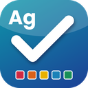

Da aula à nota, com critério.
O VISTO regista as atitudes de cada aluno aula a aula, junta as fichas, os trabalhos e as apresentações como elementos de avaliação por domínios e critérios, e calcula a nota, a síntese para o encarregado de educação e o relatório final — de acordo com o referencial de avaliação do agrupamento.
A ler a versão mais recente…
Experimente: clique nos níveis
Exemplo inventado de um aluno de TIC, 5.º ano. Cada domínio é a média dos seus elementos; a nota pesa os domínios.
Dois programas, a mesma forma de trabalhar
O VISTO Pf trabalha só no seu computador. O VISTO Ag dá uma conta a cada professor no servidor do agrupamento e sincroniza entre computadores e telemóvel.
| VISTO Pfpara o professor | VISTO Agpara o agrupamento | |
|---|---|---|
| Avaliação aula a aula, elementos de avaliação, autoavaliação e relatórios | Sim | Sim |
| Funciona sem Internet | Sim | Sim (envia depois) |
| Onde ficam os dados | No seu computador | No computador e no servidor da escola |
| App Android | Liga-se ao seu computador | Entra com a sua conta |
| Vários computadores com os mesmos dados | Não | Sim |
| Painel da direção, medidas de suporte partilhadas, logotipos do agrupamento | Não | Sim |
| Secretaria, biblioteca, bar, ponto e kits de primeiros socorros | Não | Sim |
| Experimentar sem chave | 30 dias | Com o agrupamento |
O que faz, ao longo do período
Pensado para o dia a dia do professor — do 5.º ano aos cursos profissionais, com módulos, UFCD e escala de 0 a 20.
Na aula
Com o computador ou o telemóvel
- Atitudes num cliquePontualidade, atenção, participação, empenho… de 1 a 5, pelo rato ou pelo teclado. São informação formativa.
- Critérios quando a aula conta para a notaSe a aula tem uma ficha, um trabalho ou uma apresentação, os critérios aparecem na mesma grelha.
- «Hoje» e o horárioAs aulas do dia, a sala e a hora, e o aviso de quantas aulas faltam até ao reporte.
- SumáriosPlanificados por módulo ou semestre; numa greve passam para as aulas seguintes. Copiam-se para a plataforma da escola e saem num livro em PDF.
Depois da aula
Fichas, trabalhos e elementos de avaliação
- Fichas com matriz de correçãoAnexe o enunciado; as questões, as cotações, os domínios e os critérios de cada questão são lidos da matriz.
- Defesa e uso de IARegiste se o aluno defendeu o trabalho. O que não foi defendido fica assinalado e é o professor que decide se conta.
- Domínios, subdomínios e critériosCada elemento conta nos domínios e subdomínios que avalia, com os pesos aprovados pelo grupo disciplinar.
- Copiar entre turmasOs elementos e as fichas passam para outra turma, na aula dessa turma mais próxima da data.
No fim do período
Reportes, semestres e módulos
- Autoavaliação reporte a reporteNo computador, em modo aluno, ou no telemóvel. Os avisos mudam de vermelho para laranja e verde à medida que os alunos a fazem.
- Grelha de avaliação e pautaCada rubrica com os domínios que avaliou, as médias, o total e a nota final, em PDF com os logotipos da escola.
- Relatório final e sínteseO cálculo da nota de cada aluno, domínio a domínio, e a mensagem para o encarregado de educação.
- Plano do períodoUm semáforo mostra se cada domínio já tem elementos suficientes antes de chegar ao fim do período.
A nota vem dos domínios, não das atitudes
O VISTO segue o referencial de avaliação e classificação do agrupamento.
A classificação resulta dos elementos de avaliação — fichas, testes, trabalhos, projetos, apresentações, observação direta — organizados pelos domínios da disciplina, cada um com o seu peso. Dentro de cada elemento, os critérios (conhecimento, consistência, comunicação, consciência e criatividade) têm percentagens que se reajustam sozinhas.
As atitudes registadas aula a aula continuam a ser importantes, mas entram como informação formativa: aparecem na síntese e no perfil do aluno, sem mudar a nota.
Alunos transferidos deixam de ter nota a partir da data da transferência. As medidas de suporte, o delegado e o subdelegado ficam assinalados na fotografia.
Escala dos níveis
- Muito Bom90–100 % · 18–20
- Bom70–89 % · 14–17
- Suficiente50–69 % · 10–13
- Insuficiente20–49 % · 4–9
- Muito Insuficiente0–19 % · 0–3
No ensino básico, níveis de 1 a 5. No profissional e no secundário, valores de 0 a 20, também em cada critério.
Descarregar
Sempre a versão mais recente. Depois de instalado, o programa atualiza-se sozinho ao abrir e de 6 em 6 horas, sem mexer nos seus dados.

VISTO Ag para WindowsInstalador App Android do VISTO PfLiga-se ao seu computador App Android do VISTO AgEntra com a sua conta- InstalarExecute o instalador. Se o Windows disser que o programa não é reconhecido, escolha «Mais informações» e «Executar mesmo assim».
- Ativar a licençaEm Definições, Dados, Licença, cole a chave que recebeu. Sem chave, o VISTO Pf funciona 30 dias.
- Ligar o telemóvelEm Definições, Telemóvel, leia o código QR com o telemóvel, instale a app e escreva o PIN.
Novidades da versão mais recente
—
Os dados dos alunos são da escola
O VISTO foi desenhado para os proteger.
- Cada professor vê apenas os seus dados; a direção gere as contas sem ver avaliações nem nomes de alunos.
- Palavras-passe guardadas com PBKDF2 e bloqueio de tentativas; ligações por HTTPS.
- As atualizações são confirmadas (SHA-256) antes de serem instaladas, e os certificados são verificados pelo Windows.
- A app do telemóvel liga-se com PIN; fora da escola usa um túnel seguro.
- O apoio técnico a um colega fica registado e o colega é avisado.
- Antes de qualquer mudança grande, o programa guarda uma cópia dos dados. Nada é apagado por falta de licença.
Perguntas frequentes
Preciso de Internet?
Não para trabalhar. O VISTO grava tudo no computador; a Internet só é usada para as atualizações, para confirmar a licença de vez em quando e, se quiser, para a app do telemóvel fora da escola.
As atitudes contam para a nota?
Não. Seguindo o referencial, a nota vem dos elementos de avaliação organizados por domínios. As atitudes são informação formativa: aparecem na síntese e no perfil do aluno.
Funciona com cursos profissionais?
Sim: módulos, UFCD e UC, escala de 0 a 20, autoavaliação no fim de cada módulo, aulas não dadas com reposição e antecipação, e aviso das aulas que faltam até à data limite.
Posso usar os domínios do meu grupo disciplinar?
Sim. Em Critérios da disciplina definem-se os domínios, os pesos, os subdomínios e os descritores dos critérios. Podem exportar-se e importar-se para partilhar com os colegas.
Posso experimentar antes de comprar?
Sim. O VISTO Pf funciona 30 dias sem chave. Depois, sem licença, abre em modo de consulta: vê, imprime e exporta os seus dados, mas não grava alterações.
Como obtenho uma licença ou o VISTO Ag para o meu agrupamento?
Contacte o autor do VISTO.
O código do programa está disponível?
Não. Esta página distribui apenas os instaladores e as apps.